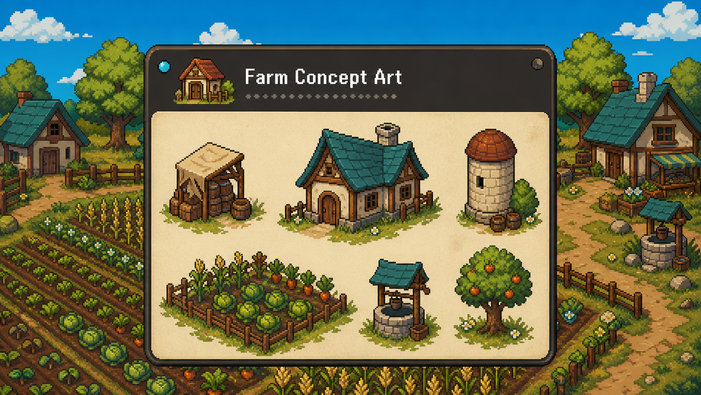
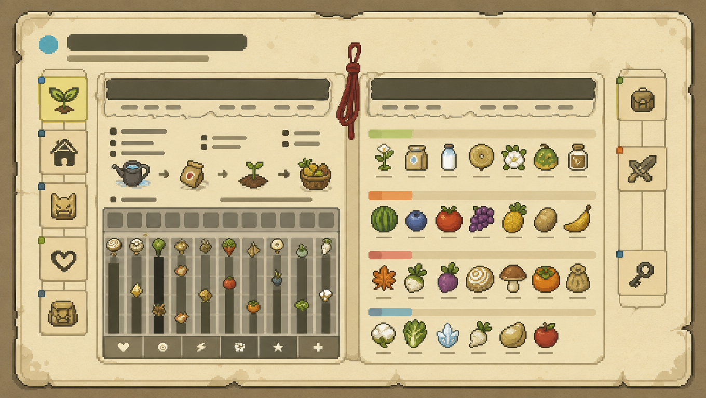
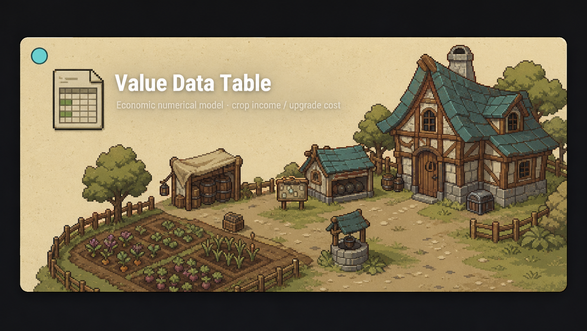

一份完整的像素农场养成游戏策划方案，涵盖从核心玩法循环、养成系统、资源经济到初期Demo规划的全部内容。旨在构建一个“轻松治愈但富有策略深度”的农场经营体验。
策划案包含详细的数值框架（作物生长曲线、工具升级消耗、动物亲密度系统）、UI/UX流程图以及一个可玩的Demo级原型规划，为后续开发提供清晰路线图。
▸ 设计愿景： 让玩家在“种植→收获→加工→社交”的循环中，感受到持续的成长反馈与温馨的社区氛围。
↑ 循环产出金币与经验，用于升级工具、扩建土地、解锁新作物，形成“成长-反馈-再投入”的正向闭环。
初期Demo将聚焦于“核心耕种循环”与“基础经济系统”，包含：
完整策划案包含UI线框图、数值表以及开发里程碑规划，随简历可一并提供。


